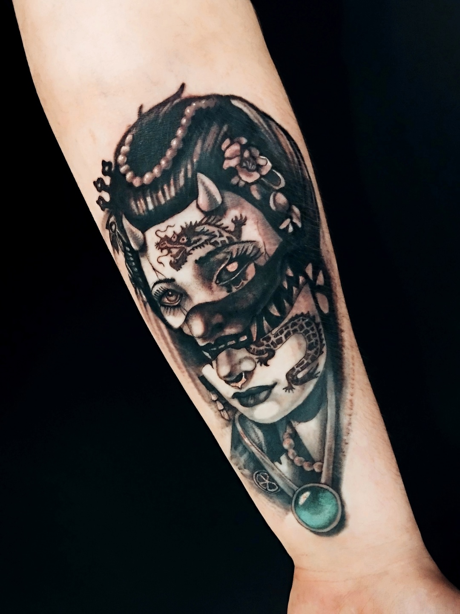
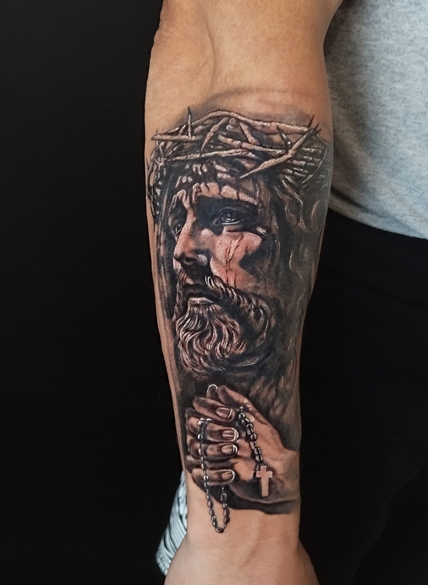
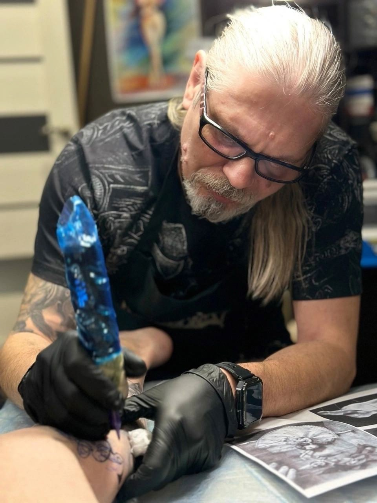
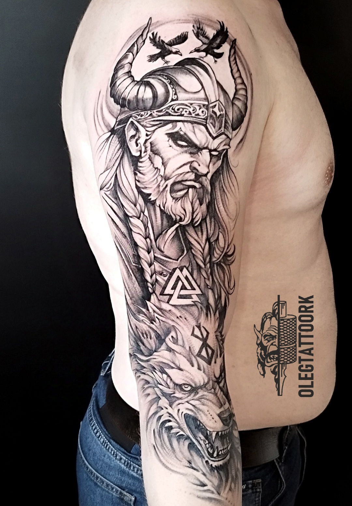
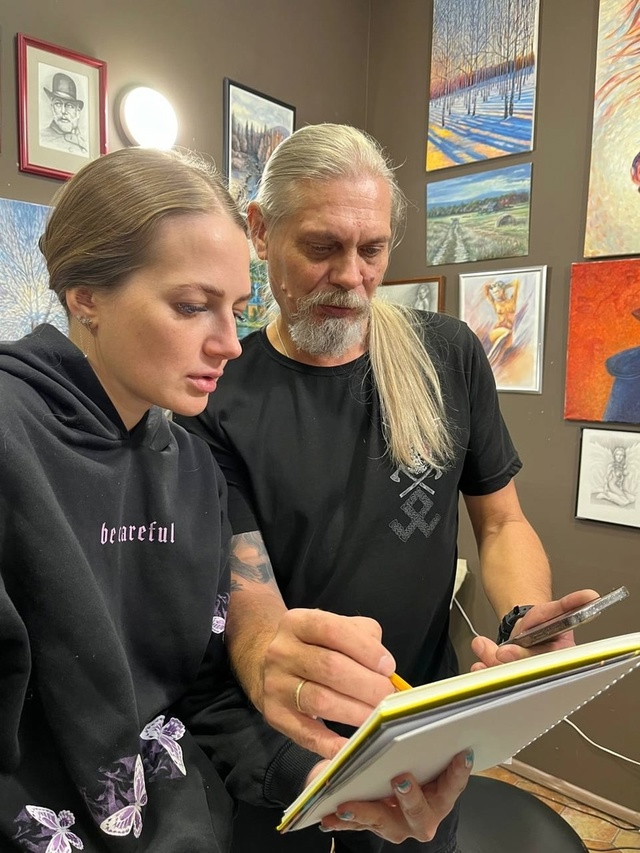
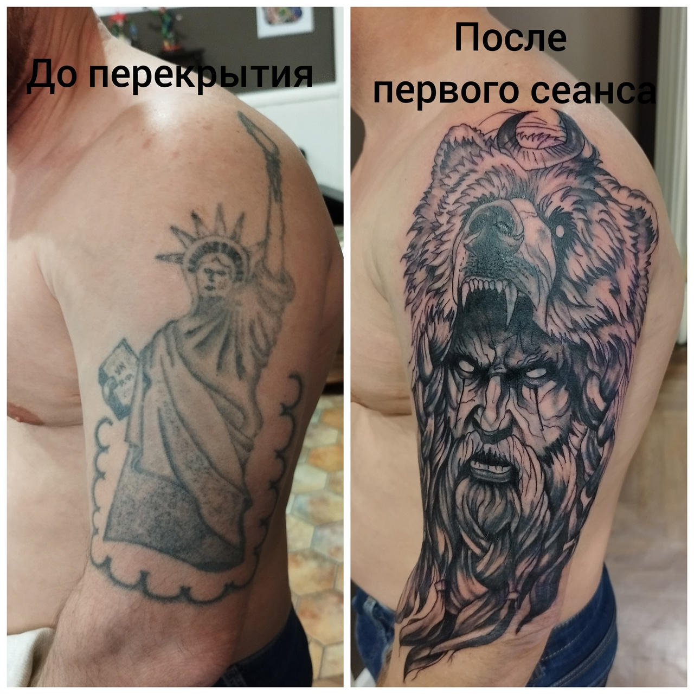

До курса доход Олега Попова, художника, тату-мастера из Иркутска составлял 60–80 тыс. руб в месяц, клиенты находились с трудом.
Мечта была не только на тату привлекать, но и на обучение рисованию и тату. После работы с куратором за 3 недели доход вырос до 100+ тыс. руб, к Новому году — почти до 180 тыс. руб. Клиенты начали активно писать, записываться на услуги. И не только тату, а на обучение рисованию и даже на портрет по фото.
— Олег, расскажи, что было до курса? Сколько клиентов в месяц? Какой доход? Как приходилось искать клиентов? Тяжело ли они тебе доставались?
— Начиная с 2019 года я пытался найти грамотное обучение развития в соцсетях. Даже государство в моем вопросе по участвовало. Думаете как? Оказывается после 50 лет любой желающий может бесплатно пройти курсы повышения квалификации или получить новую специальность. Мне было предложено на выбор много всего, но я выбрал интересующую меня тему: развитие с нуля в соцсетях VK, Однокласники и Яндекс услугах.
Отличное было начало.
Побегал, пособирал справки и стал ждать когда мне на "халяву" начнут давать знания. Не тут-то было. Не поверите, но ничего не получилось. Я один такой долбоеб нашелся на всю Иркутскую область. Группу не удалось собрать. А нужно то было всего то 5-7 человек со всей области и с возрастом 50 лет.
Это было в 22-м году.

Вторую попытку государство сделало в конце 23-го года. Но предложено было пройти обучение с работой на маркет плейсах: Озон, Валдберис, Алиэкспресс. Не совсем то что мне нужно было, но других вариантов не было. Ура, прошел. Могу и знаю как работать с этими платформами. Но я ремесленник а не торгаш.
Параллельно искал как же можно научиться работать с соцсетями. Все предложения сводились к одному: "Давай денег мы приведем тебе клиентов."
Денег пришлось бы давать постоянно...
К счастью, я увидел в вк рекламу Евгении. Решил довериться сибирячке) В среднем доход до курса плавал от 60к до 80к.

— Ты еще не до конца прошел курс, но все же расскажи, как тебе уроки? Сложно ли по ним узнавать новый материал? Если есть сложности, то какие?
— Весь материал в курсе подаётся грамотно и разжеванно, а вот использование и применение этих знаний требует и времени и раскачки. Впрочем как и в любом ремесле и обучении.
Сначала я прошел бесплатные уроки. Взаимодействовал на них с куратором. Мне все понравилось и дальше началась серьезная работа на курсе.

Условия для обучения идеальны. Выбираешь сам время и изучаешь. Я правда только к уроку 7 где-то понял, что задания идут по нарастающей, с постоянным закрепом предыдущих и отсылкой к началу. А то сидишь, такой, делаешь задание, ломаешь голову, а оно все уже в следующем уроке разжовывается.
Но это и правильно. Сначала включаешься, а потом закрепляешь знания. Так что я теперь с курсами как с настольной книгой.
Раньше ноут на работе все время жил, а теперь каждый день его домой таскаю и обратно – вдруг минутка или час выпадет и я поучусь)
— Вау! Скажи, как тебе работа с куратором? Мотивирует?

Если бы не Лидия, всё было бы сложнее. Уже после настройки личной страницы на бесплатных уроках с куратором Лидией через неделю начали приходить клиенты. Что уж говорить о большом, тут вообще все серьезно)
— Ты остановился на 19 уроке, рекламу еще даже не пробовал запускать, но клиенты начали идти, верно? А как именно это начало происходить? Клиенты начали сами писать, интересоваться?
— Да. Клиенты начали писать и подписываться. Причем, как на тату так и на обучение рисованию и даже на портрет по фото. Писали люди как с вахт так и с других областей. Кого-то консультировал и запись через месяц ставил. Кто-то с нового года уже по предоплате записался.
Консультировал сначала текстом, потом выводил на звонок по телефону. Местным назначал консультацию в удобное им время.

Вы не поверите, но я на работе с 03.01 и уже до 14 го числа полная запись. А пост-закреп в лс до сих пор лайкают.
— Ты писал, что в декабре у тебя вышло 180 тысяч, получается, по сравнению с ноябрем ты увеличил доход втрое? Можно так сказать?
— Все так. Я зашел на курс 18 ноября. Через 3 недели доход стал больше 100к. К новому году почти 180к.
Но, не обольщаюсь. Я, на самом деле, ещё не вышел на рекламу в сообществе. Работы много и по всем моим направлениям в ремесле. Правильная подача, написание постов, настройка и страницы, и сообщества. Но, без курса Евгении Брун было бы невозможно продвигать себя – это точно!

— А что-то смог себе уже позволить из того, чего раньше не позволял? На что пускаешь сейчас свой заработок?
— Коплю на летний отдых. Но, не спрашивай, пока не скажу куда)
— Последний вопрос – что посоветуешь тем, кто сомневается или выбирает курс?
— Если вы ищете качественное обучение и готовы вложить усилия, этот курс будет правильным выбором, без сомнений.
— Спасибо, Олег, за ответы! Дальнейшего роста! Иди дальше по урокам курса и радуй нас своими новыми цифрами доходов и классных клиентов)